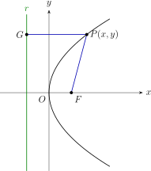
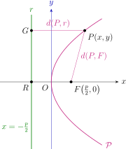
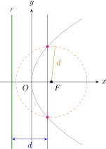
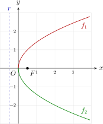
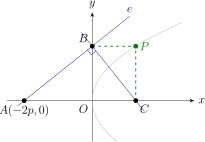
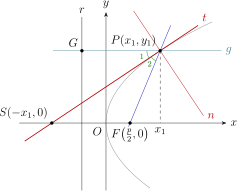
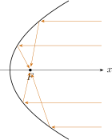
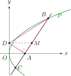
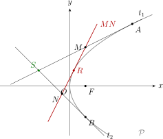

Hoofdstuk 3De parabool

Leerplandoelstellingen (GO! Navigator)
Gevorderde wiskunde (WD3_06.08)
-
• WD3_06.08.11.02 De leerlingen formuleren cirkel, ellips, parabool, hyperbool als meetkundige plaats.
-
• WD3_06.08.11.03 De leerlingen formuleren de standaardvergelijkingen van cirkel, ellips, parabool, hyperbool.
Aanvullend voor het onderdeel functieonderzoek van de halve parabolen
-
• WD3_06.08.21 (MD 06.08.07) De leerlingen leggen het verband tussen de grafiek en het voorschrift van een functie en haar kenmerken.
-
– afbakening: veeltermfuncties, rationale functies, (elementaire) irrationale functies, exponentiële functies, logaritmische functies \(f(x)=\log _a(x)\), goniometrische functies \(f(x)=\cos x\) en \(f(x)=\tan x\), cyclometrische functies, absolute waardenfunctie, meervoudig functievoorschrift
-
– afbakening: domein, bereik, nulwaarden, tekenverloop, stijgen/dalen/constant, extrema, constante/toenemende/afnemende stijging/daling, symmetrie, periode, amplitude, asymptotisch gedrag, gedrag op oneindig
-
-
• WD3_06.08.28.01 (MD 06.08.17) De leerlingen berekenen de afgeleide functie van functies die zijn opgebouwd uit veeltermfuncties, rationale functies, irrationale functies, exponentiële functies, logaritmische functies en goniometrische functies.
-
• WD3_06.08.29 (MD 06.08.18) De leerlingen analyseren het verloop van functies met behulp van de eerste en tweede afgeleide functie en lossen extremumproblemen op.
-
– afbakening: stelling van Rolle, middelwaardestelling van Lagrange
-
Didactische uitwerking: de parabool als meetkundige plaats, topvergelijking \(y^2=2px\) en haar andere vormen, functieonderzoek van de bovenste en onderste halve parabool, constructie en parametervoorstelling, raaklijn in een punt van de parabool, hoofdeigenschap en optische eigenschap, raaklijnen uit een punt buiten de parabool en de raakkoorde.
I Definitie
1 Definitie
Een parabool is de verzameling van alle punten van het vlak die even ver liggen van een gegeven punt \(F\) als van een gegeven rechte \(r\).
-
• Het punt \(F\) noemen we het brandpunt.
-
• De rechte \(r\) noemen we de richtlijn.
\[ \mathcal {P}=\{\,P \in \pi _0 \mid d(P,r)=d(P,F)\,\} \]
II Cartesische vergelijking
1 Keuze van het assenstelsel

| geg.: | richtlijn \(r\) |
| brandpunt \(F\) | |
| gev.: | vergelijking van \(\mathcal {P}\) |
Keuze van het assenstelsel:
-
• \(x\)-as \(=\) loodlijn uit \(F\) op \(r\), \(x\cap r=\{R\}\)
-
• \(O=\) midden van \([RF]\)
-
• \(y\)-as \(\perp \) \(x\)-as in \(O\)
\[ \Rightarrow \quad F\Bigl (\frac {p}{2},0\Bigr ) \qquad \text {en}\qquad r \leftrightarrow x=-\frac {p}{2} \qquad \text {met } p>0 \]
2 Punten construeren
-
• Trek een evenwijdige met \(r\).
-
• Pas de afstand tussen \(r\) en die evenwijdige af vanuit \(F\).
Zo vinden we op elke evenwijdige rechts van \(O\) twee punten van \(\mathcal {P}\).

3 Opstellen vergelijking
Stel \(G\) de loodrechte projectie van \(P(x,y)\) op \(r\), dus \(G\bigl (-\frac {p}{2},y\bigr )\).
\(\seteqnumber{0}{}{0}\)\begin{align*} P(x,y)\in \mathcal {P} &\iff |PF| = \underbrace {|PG|}_{=\,d(P,r)} \\ &\iff \sqrt {\Bigl (x-\frac {p}{2}\Bigr )^2+(y-0)^2}=\sqrt {\Bigl (x+\frac {p}{2}\Bigr )^2+(y-y)^2} && \shortstack [l]{\text {BV: OK}\\\text {KV: OK}} \\ &\iff \Bigl (x-\frac {p}{2}\Bigr )^2+y^2=\Bigl (x+\frac {p}{2}\Bigr )^2 \\ &\iff x^2-px+\frac {p^2}{4}+y^2=x^2+px+\frac {p^2}{4} \\ &\iff \boxed {y^2=2px} \end{align*}
Beide wortels zijn positief, dus kwadrateren levert een equivalente vergelijking op.
4 Besluit
\(\mathcal {P} \leftrightarrow y^2=2px\) is de topvergelijking van de parabool met
-
• top \(O(0,0)\) en \(y\)-as \(=\) topraaklijn;
-
• brandpunt \(F\bigl (\frac {p}{2},0\bigr )\);
-
• richtlijn \(r \leftrightarrow x=-\frac {p}{2}\);
-
• \(x\)-as \(=\) symmetrieas.
III Functieonderzoek
1 Twee functies
\[ y^2=2px \iff y=\sqrt {2px} \ \vee \ y=-\sqrt {2px} \]
\(\mathcal {P}\) kan dus beschreven worden met twee functies:
\[ f_1(x)=\sqrt {2px} \qquad \text {en}\qquad f_2(x)=-\sqrt {2px} \]
We onderzoeken \(f_1\). De grafiek van \(f_2\) is het spiegelbeeld van de grafiek van \(f_1\) om de \(x\)-as.
2 Domein
\[ \text {eis: } 2px\ge 0 \iff x\ge 0 \quad (p>0) \qquad \Rightarrow \qquad \boxed {\dom f_1=\R ^+} \]
3 Continuïteit
\(f_1\) is een irrationale functie \(\Rightarrow \) \(f_1\) is continu in \(\dom f_1=\R ^+\).
4 Snijpunten met de assen
\[ f_1(x)=0 \iff x=0 \qquad \Rightarrow \qquad \text {enkel de top } O(0,0) \]
5 Tekenverloop
\[ \begin {array}{c|ccc} x & & 0 & \\ \hline f_1(x) & /// & 0 & + \end {array} \]
6 Asymptoten
- VA:
-
geen noemer \(\Rightarrow \) geen VA.
- HA:
-
\(\displaystyle \lim _{x\to +\infty }\sqrt {2px}=+\infty \) \(\Rightarrow \) geen HA.
- SA:
-
\(\displaystyle \lim _{x\to +\infty }\frac {\sqrt {2px}}{x} =\lim _{x\to +\infty }\frac {\sqrt {2p}}{\sqrt {x}}=0\notin \R _0\) \(\Rightarrow \) geen SA.
7 Stijgen en dalen
\(\seteqnumber{0}{}{0}\)\begin{align*} f_1'(x) &= \frac {(2px)'}{2\sqrt {2px}} = \frac {2p}{2\sqrt {2px}} = \frac {p}{\sqrt {2px}} \end{align*}
\[ \begin {array}{c|ccc} x & & 0 & \\ \hline T=p & & + & + \\ N=\sqrt {2px} & /// & 0 & + \\ \hline f_1'(x)=\dfrac {T}{N} & /// & | & + \\ \hline f_1 & /// & 0 & \nearrow \end {array} \]
\[ \lim _{x \underset {>}{\to } 0} f_1'(x) = +\infty \qquad \Rightarrow \qquad f_1 \text { stijgt op } \R ^+ \text {, met een verticale raaklijn in } O(0,0) \]
8 Hol en bol
\(\seteqnumber{0}{}{0}\)\begin{align*} f_1''(x) &= \Bigl (p\,(2px)^{-\frac 12}\Bigr )' \\ &= p\cdot \Bigl (-\frac 12\Bigr )(2px)^{-\frac 32}\cdot 2p \\ &= \frac {-p^2}{2px\sqrt {2px}} \\ &= \frac {-p}{2x\sqrt {2px}} < 0 \quad \text {in } \R _0^+ \end{align*}
\[ \begin {array}{c|ccc} x & & 0 & \\ \hline f_1''(x) & /// & | & - \\ \hline f_1 & /// & 0 & \cap \end {array} \qquad \Rightarrow \qquad f_1 \text { is bol} \]
9 Grafiek
Een tabel van waarden maken we met het GRM, bijvoorbeeld voor \(p=1\).

IV Oefeningen
VBTL oefening 2 (p 39)
Stel een vergelijking op van de parabool met top \(O\) en de \(x\)-as als symmetrieas als:
-
(b) het punt \(A(3,2)\) op de parabool ligt;
\(y^2=\dfrac {4}{3}x\)
\(\seteqnumber{0}{}{0}\)\begin{align*} A(3,2)\in \mathcal {P} \leftrightarrow y^2=2px &\Rightarrow 2^2=2p\cdot 3 \\ &\iff p=\frac {4}{6}=\frac {2}{3} \\ &\Rightarrow \boxed {\mathcal {P} \leftrightarrow y^2=\frac {4}{3}x} \end{align*}
-
(c) de richtlijn \(r \leftrightarrow 2x+1=0\) is.
\(y^2=2x\)
\(\seteqnumber{0}{}{0}\)\begin{align*} r \leftrightarrow 2x+1=0 \iff x=-\frac {1}{2} &\Rightarrow \frac {p}{2}=\frac {1}{2} \\ &\iff p=1 \\ &\Rightarrow \boxed {\mathcal {P} \leftrightarrow y^2=2x} \end{align*}
Deelvraag (a) volgt na het onderdeel over de andere vormen van de topvergelijking.
VBTL oefening 4 (p 39)
Bepaal de snijpunten van de parabool en de rechte.
-
(a) \(y^2=4x\) en \(y=x\)
\(P_1(0,0)\) en \(P_2(4,4)\)
\[ \begin {cases} y^2=4x \\ y=x \end {cases} \]
\(\seteqnumber{0}{}{0}\)\begin{align*} &\Rightarrow x^2=4x \\ &\iff x^2-4x=0 \\ &\iff x(x-4)=0 \\ &\iff x=0 \ \vee \ x=4 \\ &\Rightarrow \boxed {P_1(0,0) \text { en } P_2(4,4)} \end{align*}
-
(b) \(y^2+x=0\) en \(x+y-2=0\)
geen snijpunten
\[ \begin {cases} y^2+x=0 \\ x+y-2=0 \end {cases} \iff \begin {cases} x=-y^2 \\ -y^2+y-2=0 \end {cases} \]
\[ D=1-8<0 \qquad \Rightarrow \qquad \boxed {\text {geen snijpunten}} \]
-
(c) \(9y+x^2=0\) en \(2x+3y-3=0\)
\(P_1=P_2(3,-1)\)
\[ \begin {cases} 9y+x^2=0 \\ 2x+3y-3=0 \end {cases} \iff \begin {cases} y=-\dfrac {x^2}{9} \\[1ex] 2x+3\Bigl (-\dfrac {x^2}{9}\Bigr )-3=0 \end {cases} \]
\(\seteqnumber{0}{}{0}\)\begin{align*} 2x-\frac {x^2}{3}-3=0 &\iff -x^2+6x-9=0 \\ &\qquad D=36-36=0 \\ &\iff x_1=x_2=\frac {-6}{-2}=3 \\ &\Rightarrow \boxed {P_1=P_2(3,-1)} \end{align*} Eén snijpunt: de rechte raakt de parabool in \((3,-1)\).
V Constructie van de parabool
1 Constructie
Gegeven: de topvergelijking \(\mathcal {P} \leftrightarrow y^2=2px\).

-
1. Punt \(A(-2p,0)\).
-
2. Willekeurige rechte \(e\) door \(A\) met rico \(\lambda \).
-
3. \(e\) snijdt de \(y\)-as in \(B\).
-
4. Loodlijn in \(B\) op \(AB\).
-
5. Die snijdt de \(x\)-as in \(C\).
-
6. \(\Rightarrow P(x_C,y_B)\in \mathcal {P}\).
2 Bewijs
Stel \(\lambda =\) rico van \(AB\).
\(\seteqnumber{0}{}{0}\)\begin{align*} &\Rightarrow AB \leftrightarrow y-0=\lambda (x+2p) \iff y=\lambda x+2p\lambda \\ &\Rightarrow B \begin{cases} AB \\ y\text {-as} \end {cases} \iff \begin{cases} y=\lambda x+2p\lambda \\ x=0 \end {cases} \iff \begin{cases} y=2p\lambda \\ x=0 \end {cases} \Rightarrow B(0,2p\lambda ) \end{align*}
\(\seteqnumber{0}{}{0}\)\begin{align*} &BC\perp AB \Rightarrow m_{BC}=-\frac {1}{\lambda } \\ &\Rightarrow BC \leftrightarrow y-2p\lambda =-\frac {1}{\lambda }(x-0) \iff x+\lambda y-2p\lambda ^2=0 \\ &\Rightarrow C \begin{cases} BC \\ x\text {-as} \end {cases} \iff \begin{cases} x+\lambda y-2p\lambda ^2=0 \\ y=0 \end {cases} \iff \begin{cases} x=2p\lambda ^2 \\ y=0 \end {cases} \Rightarrow C(2p\lambda ^2,0) \end{align*}
\(\seteqnumber{0}{}{0}\)\begin{align*} \Rightarrow P(2p\lambda ^2,2p\lambda ) \in \mathcal {P}\,? \qquad y^2 &\overset {?}{=} 2px \\ \iff (2p\lambda )^2 &\overset {?}{=} 2p\cdot 2p\lambda ^2 \\ \iff 4p^2\lambda ^2 &= 4p^2\lambda ^2 \qed \end{align*}
Voor \(\lambda =0\) is \(e\) de \(x\)-as zelf: dan is \(B=O\), de loodlijn in \(B\) is de \(y\)-as en ook \(C=O\). De constructie levert dan de top \(O(0,0)\).
3 Gevolg: stelsel parametervergelijkingen
\[ \mathcal {P} \leftrightarrow \boxed { \begin {cases} x=2p\lambda ^2 \\ y=2p\lambda \end {cases} \qquad \text {met } \lambda \in \R } \]
Dit is een stelsel parametervergelijkingen van de parabool \(\mathcal {P} \leftrightarrow y^2=2px\).
Voor elke keuze van \(\lambda \) vinden we één punt van de parabool, bijvoorbeeld \(\lambda =0 \Rightarrow \) de top \((0,0)\). Geef het stelsel ook eens in op het GRM, in de parametermodus.
VI Raaklijn aan de parabool in een punt van de parabool
1 Opstellen vergelijking
\[ \mathcal {P} \leftrightarrow y^2=2px \qquad \Rightarrow \qquad y=\pm \sqrt {2px} \]
Herhaling analyse: de raaklijn aan de grafiek van \(f\) in \((a,f(a))\) is
\[ y-f(a)=f'(a)\,(x-a) \qquad \text {of}\qquad y-y_1=f'(x_1)\,(x-x_1) \text { in } P_1(x_1,y_1). \]
Bovenste helft: \(f(x)=\sqrt {2px}\)
\(\seteqnumber{0}{}{0}\)\begin{align*} &P_1(x_1,y_1)\in \mathcal {P} \Rightarrow y_1=\sqrt {2px_1} \\ &f'(x)=\frac {p}{\sqrt {2px}} \Rightarrow f'(x_1)=\frac {p}{\sqrt {2px_1}}=\frac {p}{y_1} \end{align*}
\(\seteqnumber{0}{}{0}\)\begin{align*} \Rightarrow \ t \leftrightarrow y-y_1 &= \frac {p}{y_1}(x-x_1) \\ \iff y_1y-y_1^2 &= px-px_1 \\ \iff y_1y &= px-px_1+y_1^2 \\ \iff y_1y &= px-px_1+2px_1 && y_1^2=2px_1 \text { want } P_1\in \mathcal {P} \\ \iff y_1y &= p(x+x_1) \end{align*}
Onderste helft: \(f(x)=-\sqrt {2px}\)
\(\seteqnumber{0}{}{0}\)\begin{align*} &\Rightarrow f'(x_1)=\frac {-p}{\sqrt {2px_1}}=\frac {-p}{-y_1}=\frac {p}{y_1} \\ &\Rightarrow t \leftrightarrow y-y_1=\frac {p}{y_1}(x-x_1) \qquad \Rightarrow \qquad \text {zelfde resultaat!} \end{align*}
\[ \boxed {t \leftrightarrow y_1y=p(x+x_1)} \]
is de vergelijking van de raaklijn in \(P_1(x_1,y_1)\in \mathcal {P}\) aan \(\mathcal {P}\).
In de top is \(y_1=0\) en bestaat \(f'(x_1)\) niet. De formule geldt daar toch: \(0\cdot y=p(x+0) \iff x=0\), en dat is de verticale raaklijn in \(O\), de topraaklijn.
2 Constructie van de raaklijn
De raaklijn \(t\) gaat door \(P_1(x_1,y_1)\). Als tweede punt zoeken we het snijpunt \(S\) met de \(x\)-as:
\[ S \begin {cases} t \\ x\text {-as} \end {cases} \iff \begin {cases} y_1y=p(x+x_1) \\ y=0 \end {cases} \iff \begin {cases} x=-x_1 \\ y=0 \end {cases} \qquad \Rightarrow \qquad S(-x_1,0) \]

Besluit De raaklijn \(t\) in \(P(x_1,y_1)\in \mathcal {P}\) aan \(\mathcal {P}\) gaat door \(S(-x_1,0)\).
3 Hoofdeigenschap
De raaklijn \(t\) en de normaal \(n\) in het punt \(P(x_1,y_1)\) van de parabool zijn de bissectrices van de hoeken tussen de rechte \(PF\) (\(F=\) brandpunt) en de rechte door \(P\) evenwijdig met de \(x\)-as.
4 Bewijs
Figuur: zie de constructie van de raaklijn.
-
• \(t=\) raaklijn, \(n=\) normaal \(\Rightarrow \) \(n\perp t\)
-
• \(g=\) rechte door \(P\) evenwijdig met de \(x\)-as, \(G=g\cap r\)
t.b.:
\[ |\hat {P}_1|=|\hat {P}_2| \qquad \text {met } \hat {P}_1=G\hat {P}S \text { en } \hat {P}_2=S\hat {P}F \]
Beschouw de vierhoek \(GPFS\).
\(\seteqnumber{0}{}{0}\)\begin{align*} &GP \parallel SF \quad (\text {gegeven}) \\ &|GP|=\Bigl |\frac {p}{2}+x_1\Bigr |=|FS| \\ &\Rightarrow GPFS \text { is een parallellogram (2 evenwijdige en gelijke zijden)} \\ &\text {Maar } P\in \mathcal {P} \iff |Pr|=|PF| \iff |PG|=|PF| \\ &\Rightarrow GPFS \text { is een ruit met } PS \text { als diagonaal} \\ &\Rightarrow PS=\text {symmetrieas van de ruit} \\ &\Rightarrow PS=\text {bissectrice van } G\hat {P}F \\ &\Rightarrow |\hat {P}_1|=|\hat {P}_2| \end{align*} Omdat \(n\perp t\), is \(n\) dan de bissectrice van de nevenhoek. □
5 Gevolg: optische eigenschap van de parabool
Een straal die evenwijdig met de as op een parabolische spiegel invalt, wordt teruggekaatst naar het brandpunt van de spiegel.

Voorbeelden (zie handboek p 35):
-
• telescopen;
-
• koplamp en zaklamp (de omgekeerde eigenschap: licht uit het brandpunt vertrekt evenwijdig met de as);
-
• schotelantenne.
6 Oefeningen
VBTL oefening 6 (p 39)
Stel een vergelijking op van de raaklijn \(t\) en van de normaal \(n\) aan de parabool \(\mathcal {P}\) in het punt \(Q\).
-
(a) \(\mathcal {P} \leftrightarrow y^2=\dfrac {4}{3}x\) en \(Q(3,-2)\)
\(t \leftrightarrow x+3y+3=0\), \(n \leftrightarrow 3x-y-11=0\) \(p=\dfrac {2}{3}\)
\(\seteqnumber{0}{}{0}\)\begin{align*} t \leftrightarrow y_1y &= p(x+x_1) & n \leftrightarrow y-y_1 &= \frac {-1}{m_t}(x-x_1) \\ \iff -2y &= \frac {2}{3}(x+3) & \iff y+2 &= \frac {-1}{-1/3}(x-3) \\ \iff 2x+6y+6 &= 0 & \iff y+2 &= 3(x-3) \\ \iff \Aboxed {x+3y+3 &= 0} & \iff \Aboxed {3x-y-11 &= 0} \end{align*}
-
(c) \(\mathcal {P} \leftrightarrow y^2=6x\) en \(Q(3,\ldots )\)
\(t_{1,2} \leftrightarrow x\mp \sqrt 2\,y+3=0\), \(n_{1,2} \leftrightarrow \sqrt 2\,x\pm y-6\sqrt 2=0\)
\[ y^2=6\cdot 3 \Rightarrow y=\pm 3\sqrt 2 \qquad p=3 \]
\(\seteqnumber{0}{}{0}\)\begin{align*} &Q_1(3,3\sqrt 2) & &Q_2(3,-3\sqrt 2) \\ &t_1 \leftrightarrow 3\sqrt 2\,y=3(x+3) & &t_2 \leftrightarrow -3\sqrt 2\,y=3(x+3) \\ &\iff \boxed {x-\sqrt 2\,y+3=0} & &\iff \boxed {x+\sqrt 2\,y+3=0} \\ &n_1 \leftrightarrow y-3\sqrt 2=-\sqrt 2\,(x-3) & &n_2 \leftrightarrow y+3\sqrt 2=\sqrt 2\,(x-3) \\ &\iff \boxed {\sqrt 2\,x+y-6\sqrt 2=0} & &\iff \boxed {\sqrt 2\,x-y-6\sqrt 2=0} \end{align*}
De deelvragen (b) en (d) volgen na het onderdeel over de andere vormen van de topvergelijking.
VII Andere vormen van de topvergelijking
1 Overzicht

Telkens is \(p>0\) en de top \(O(0,0)\).
\[ \renewcommand {\arraystretch }{1.6} \begin {array}{c|c|c|c} \mathcal {P} & F & r & t \text { in } P_1(x_1,y_1) \\ \hline y^2=2px & \bigl (\frac {p}{2},0\bigr ) & x=-\frac {p}{2} & y_1y=p(x+x_1) \\ y^2=-2px & \bigl (-\frac {p}{2},0\bigr ) & x=\frac {p}{2} & y_1y=-p(x+x_1) \\ x^2=2py & \bigl (0,\frac {p}{2}\bigr ) & y=-\frac {p}{2} & x_1x=p(y+y_1) \\ x^2=-2py & \bigl (0,-\frac {p}{2}\bigr ) & y=\frac {p}{2} & x_1x=-p(y+y_1) \end {array} \]
Bij \(x^2=\pm 2py\) wisselen \(x\) en \(y\) van rol: de \(y\)-as is de symmetrieas en de \(x\)-as de topraaklijn. Een minteken spiegelt de parabool om de topraaklijn.
2 Oefeningen
VBTL oefening 2 (p 39)
Stel een vergelijking op van de parabool met top \(O\) en de \(x\)-as als symmetrieas, als het brandpunt \(F(-2,0)\) is.
\(y^2=-8x\)
\(\seteqnumber{0}{}{0}\)\begin{align*} F(-2,0) = \Bigl (-\frac {p}{2},0\Bigr ) &\Rightarrow \mathcal {P} \leftrightarrow y^2=-2px \\ &\qquad \frac {p}{2}=2 \iff p=4 \\ &\Rightarrow \boxed {\mathcal {P} \leftrightarrow y^2=-8x} \end{align*}
VBTL oefening 3 (p 39)
Stel een vergelijking op van de parabool met top \(O\) en de \(y\)-as als symmetrieas als:
-
(a) het brandpunt \(F(0,2)\) is;
\(x^2=8y\)
\(\seteqnumber{0}{}{0}\)\begin{align*} F(0,2) \Rightarrow \mathcal {P} \leftrightarrow x^2=2py &\quad \text {met } \frac {p}{2}=2 \iff p=4 \\ &\Rightarrow \boxed {\mathcal {P} \leftrightarrow x^2=8y} \end{align*}
-
(b) het punt \(A(3,2)\) op de parabool ligt;
\(x^2=\dfrac {9}{2}y\)
\(\seteqnumber{0}{}{0}\)\begin{align*} A(3,2)\in \mathcal {P} \leftrightarrow x^2=2py &\Rightarrow 9=2p\cdot 2 \iff p=\frac {9}{4} \\ &\Rightarrow \boxed {\mathcal {P} \leftrightarrow x^2=\frac {9}{2}y} \end{align*}
-
(c) de richtlijn \(r \leftrightarrow 2y-3=0\) is.
\(x^2=-6y\)
\(\seteqnumber{0}{}{0}\)\begin{align*} r \leftrightarrow 2y-3=0 \iff y=\frac {3}{2}=\frac {p}{2} &\Rightarrow p=3 \text { en } \mathcal {P} \leftrightarrow x^2=-2py \\ &\Rightarrow \boxed {\mathcal {P} \leftrightarrow x^2=-6y} \end{align*}
VBTL oefening 6 (p 39)
Stel een vergelijking op van de raaklijn \(t\) en van de normaal \(n\) aan de parabool \(\mathcal {P}\) in het punt \(Q\).
-
(b) \(\mathcal {P} \leftrightarrow y^2=-4x\) en \(Q(-4,4)\)
\(t \leftrightarrow x+2y-4=0\), \(n \leftrightarrow 2x-y+12=0\) \(y^2=-2px\) met \(p=2\)
\(\seteqnumber{0}{}{0}\)\begin{align*} t \leftrightarrow y_1y &= -p(x+x_1) & n \leftrightarrow y-4 &= \frac {-1}{-1/2}(x+4) \\ \iff 4y &= -2(x-4) & \iff y-4 &= 2(x+4) \\ \iff 2x+4y-8 &= 0 & \iff \Aboxed {2x-y+12 &= 0} \\ \iff \Aboxed {x+2y-4 &= 0} \end{align*}
-
(d) \(\mathcal {P} \leftrightarrow x^2=8y\) en \(Q(-4,\ldots )\)
\(t \leftrightarrow x+y+2=0\), \(n \leftrightarrow x-y+6=0\) Andere vorm! \(x^2=2py\) met \(p=4\).
\[ y=\frac {1}{8}x^2=\frac {16}{8}=2 \qquad \Rightarrow \qquad Q(-4,2) \]
\(\seteqnumber{0}{}{0}\)\begin{align*} t \leftrightarrow x_1x &= p(y+y_1) & n \leftrightarrow y-2 &= \frac {-1}{-1}(x+4) \\ \iff -4x &= 4(y+2) & \iff \Aboxed {x-y+6 &= 0} \\ \iff \Aboxed {x+y+2 &= 0} \end{align*}
Oefening 1
Stel een vergelijking op van de parabool met top \(O\) als:
-
(a) de \(x\)-as de as is en \(F(4,0)\);
\(y^2=16x\)
\[ \frac {p}{2}=4 \Rightarrow p=8 \qquad \Rightarrow \qquad \boxed {\mathcal {P} \leftrightarrow y^2=16x} \]
-
(b) de \(y\)-as de as is en \(r \leftrightarrow 4y+3=0\);
\(x^2=3y\)
\[ 4y+3=0 \iff y=-\frac {3}{4}=-\frac {p}{2} \Rightarrow p=\frac {3}{2} \qquad \Rightarrow \qquad \boxed {\mathcal {P} \leftrightarrow x^2=3y} \]
-
(c) de \(y\)-as de as is en \(F(0,5)\);
\(x^2=20y\)
\[ \frac {p}{2}=5 \Rightarrow p=10 \qquad \Rightarrow \qquad \boxed {\mathcal {P} \leftrightarrow x^2=20y} \]
-
(d) de \(x\)-as de as is en \(A(1,9)\in \mathcal {P}\).
\(y^2=81x\)
\[ \mathcal {P} \leftrightarrow y^2=2px:\quad 81=2p \iff p=\frac {81}{2} \qquad \Rightarrow \qquad \boxed {\mathcal {P} \leftrightarrow y^2=81x} \]
VBTL oefening 7 (p 39)
De rechte \(t \leftrightarrow 3x+4y+6=0\) raakt de parabool \(\mathcal {P} \leftrightarrow y^2=2px\).
-
(a) Bepaal het brandpunt van de parabool.
\(F\Bigl (\dfrac {9}{8},0\Bigr )\)
\[ t \leftrightarrow 3x+4y+6=0 \iff 4y=-3(x+2) \qquad F\Bigl (\frac {p}{2},0\Bigr )=\,? \Rightarrow p=\,? \]
Stel \(R(x_1,y_1)\) het raakpunt.
\(\seteqnumber{0}{}{0}\)\begin{align*} &\begin{cases} y_1=-\dfrac {3}{4}(x_1+2) \\ y_1^2=2px_1 \end {cases} \iff \begin{cases} y_1=\ldots \\ \dfrac {9}{16}(x_1+2)^2=2px_1 \end {cases} \\ &\iff \begin{cases} y_1=\ldots \\ 9x_1^2+36x_1+36=32px_1 \end {cases} \\ &\iff \begin{cases} y_1=\ldots \\ 9x_1^2+(36-32p)x_1+36=0 \quad (*) \end {cases} \end{align*} \(t\) raakt \(\mathcal {P}\) in \(R\) \(\Rightarrow \) \((*)\) heeft maar één oplossing voor \(x_1\).
\(\seteqnumber{0}{}{0}\)\begin{align*} &\Rightarrow D=0 \\ &\iff (36-32p)^2-4\cdot 9\cdot 36=0 \\ &\iff 36^2-2\cdot 36\cdot 32p+32^2p^2-1296=0 \\ &\iff 1024p^2-2304p=0 \\ &\iff 4p^2-9p=0 \\ &\iff p(4p-9)=0 \\ &\iff p=0 \ (\text {geen parabool}) \ \vee \ p=\frac {9}{4} \\ &\Rightarrow \boxed {F\Bigl (\frac {9}{8},0\Bigr )} \text { en } \mathcal {P} \leftrightarrow y^2=\frac {9}{2}x \end{align*}
-
(b) Bepaal het raakpunt.
\(R(2,-3)\) In \((*)\) met \(p=\dfrac {9}{4}\):
\(\seteqnumber{0}{}{0}\)\begin{align*} &9x_1^2+\Bigl (36-32\cdot \frac {9}{4}\Bigr )x_1+36=0 \\ &\iff 9x_1^2-36x_1+36=0 \\ &\iff (x_1-2)^2=0 \Rightarrow \begin{cases} x_1=2 \\ y_1=-3 \end {cases} \Rightarrow \boxed {R(2,-3)} \end{align*}
Tweede methode, voor (a) en (b) samen: met de formule van de raaklijn.
\(\seteqnumber{0}{}{0}\)\begin{align*} &t \leftrightarrow 3x+4y+6=0 \Rightarrow m_t=-\frac {3}{4} \\ &R(x_1,y_1) \Rightarrow t \leftrightarrow y_1y=p(x+x_1) \Rightarrow m_t=\frac {p}{y_1} \\ &\Rightarrow \frac {p}{y_1}=-\frac {3}{4} \iff p=-\frac {3}{4}y_1 \end{align*} Maar \(R(x_1,y_1)\in t\) en \(R\in \mathcal {P}\):
\[ \begin {cases} p=-\dfrac {3}{4}y_1 \\[1ex] y_1^2=2px_1 \\ 3x_1+4y_1+6=0 \end {cases} \iff \begin {cases} p=\ldots \\ y_1^2=-\dfrac {3}{2}y_1x_1 \\[1ex] 3x_1+4y_1+6=0 \end {cases} \]
\[ \iff \begin {cases} p=\ldots \\ y_1=-\dfrac {3}{2}x_1 \\[1ex] 3x_1-6x_1+6=0 \end {cases} \iff \begin {cases} p=\dfrac {9}{4} \\[1ex] y_1=-3 \\ x_1=2 \end {cases} \]
\[ \Rightarrow \quad \boxed {F\Bigl (\frac {9}{8},0\Bigr )} \qquad \text {en}\qquad \boxed {R(2,-3)} \]
We mochten door \(y_1\) delen: \(y_1=0\) geeft \(x_1=-2\) uit de vergelijking van \(t\), en dat punt ligt niet op een parabool \(y^2=2px\) met \(p>0\).
VIII Raaklijnen uit een punt buiten de parabool
1 Voorbeeld
Bepaal de vergelijkingen van de raaklijnen uit \(A(-3,1)\) aan de parabool \(\mathcal {P} \leftrightarrow y^2=5x\).
Eerste methode
Bepaal de rico \(m\) van de raaklijn \(t\) door \(A\), door uit te drukken dat \(t\) en \(\mathcal {P}\) één punt gemeenschappelijk hebben.
\(\seteqnumber{0}{}{0}\)\begin{align*} t \leftrightarrow y-y_A &= m(x-x_A) \\ \iff y-1 &= m(x+3) \end{align*}
\[ \begin {cases} t \leftrightarrow y-1=m(x+3) \\ \mathcal {P} \leftrightarrow y^2=5x \end {cases} \text { heeft 1 oplossing} \iff \begin {cases} x=\dfrac {y-1-3m}{m} \\[1.5ex] y^2=5\cdot \dfrac {y-1-3m}{m} \end {cases} \text { heeft 1 oplossing} \]
\(\Rightarrow \) de tweede vergelijking \(my^2-5y+5+15m=0\) heeft 1 oplossing
\(\seteqnumber{0}{}{0}\)\begin{align*} &\iff D=0 \\ &\iff 25-4m(5+15m)=0 \\ &\iff -60m^2-20m+25=0 \\ &\iff 12m^2+4m-5=0 \\ &\qquad D=16+240=256=16^2 \\ &\iff m=\frac {-4-16}{24}=-\frac {5}{6} \ \vee \ m=\frac {-4+16}{24}=\frac {1}{2} \end{align*}
\(\seteqnumber{0}{}{0}\)\begin{align*} \Rightarrow t_1 \leftrightarrow y-1 &= -\frac {5}{6}(x+3) & t_2 \leftrightarrow y-1 &= \frac {1}{2}(x+3) \\ \iff \Aboxed {5x+6y+9 &= 0} & \iff \Aboxed {x-2y+5 &= 0} \end{align*}
We deelden door \(m\). Een horizontale rechte (\(m=0\)) snijdt de parabool wel in precies één punt, maar raakt ze niet. Een verticale rechte heeft geen rico en valt buiten deze methode: kijk die apart na (zie VBTL oefening 10 (a)).
Tweede methode
Stel het raakpunt \(R(x_1,y_1)\) \(\Rightarrow \) \(t \leftrightarrow y_1y=p(x+x_1)\). Zoek eerst het raakpunt.
\[ t \leftrightarrow y_1y=\frac {5}{2}(x+x_1) \qquad \bigl (y^2=5x=2px \Rightarrow p=\tfrac {5}{2}\bigr ) \]
\(\seteqnumber{0}{}{0}\)\begin{align*} &A(-3,1)\in t \iff y_1\cdot 1=\frac {5}{2}(-3+x_1) \iff y_1=\frac {5}{2}x_1-\frac {15}{2} && (1) \\ &R(x_1,y_1)\in \mathcal {P} \iff y_1^2=5x_1 && (2) \end{align*}
\[ \Rightarrow \begin {cases} 2y_1=5x_1-15 \\ 5x_1=y_1^2 \end {cases} \iff \begin {cases} y_1^2=5x_1 \\ 2y_1=y_1^2-15 \end {cases} \]
Tweede vergelijking: \(y_1^2-2y_1-15=0\), \(D=4+60=64\)
\[ \begin {cases} y_1=\dfrac {2-8}{2}=-3 \\[1.5ex] x_1=\dfrac {1}{5}y_1^2=\dfrac {9}{5} \end {cases} \ \vee \ \begin {cases} y_1=\dfrac {2+8}{2}=5 \\[1.5ex] x_1=\dfrac {1}{5}y_1^2=5 \end {cases} \]
\(\Rightarrow \) 2 raakpunten \(R_1\bigl (\frac {9}{5},-3\bigr )\) en \(R_2(5,5)\)
\(\Rightarrow \) 2 raaklijnen
\(\seteqnumber{0}{}{0}\)\begin{align*} t_1 \leftrightarrow -3y &= \frac {5}{2}\Bigl (x+\frac {9}{5}\Bigr ) & t_2 \leftrightarrow 5y &= \frac {5}{2}(x+5) \\ \iff \Aboxed {5x+6y+9 &= 0} & \iff \Aboxed {x-2y+5 &= 0} \end{align*}
Extra: de raakkoorde
De raakkoorde is de rechte door de twee raakpunten.
\(\seteqnumber{0}{}{0}\)\begin{align*} R_1R_2 \leftrightarrow \begin{vmatrix} x & y & 1 \\ x_1 & y_1 & 1 \\ x_2 & y_2 & 1 \end {vmatrix}=0 &\iff \begin{vmatrix} x & y & 1 \\ \frac {9}{5} & -3 & 1 \\ 5 & 5 & 1 \end {vmatrix}=0 \\ &\iff -8x+\frac {16}{5}y+24=0 \\ &\iff \boxed {5x-2y-15=0} \end{align*}
Vul je de coördinaten van \(A\) in de formule van de raaklijn in, dan krijg je precies de raakkoorde: \(y_Ay=p(x+x_A)\) geeft \(y=\frac {5}{2}(x-3)\), of \(5x-2y-15=0\). Die rechte heet de poollijn van \(A\).
2 Oefeningen
VBTL oefening 10 (p 40)
Stel vergelijkingen op van de raaklijnen uit \(Q\) aan de parabool \(\mathcal {P}\), en een vergelijking van de raakkoorde.
-
(a) \(\mathcal {P} \leftrightarrow y^2=3x\) en \(Q(0,3)\)
\(t_1 \leftrightarrow x-4y+12=0\), \(t_2 \leftrightarrow x=0\), \(R_1R_2 \leftrightarrow x-2y=0\) Stel
\(\seteqnumber{0}{}{0}\)\begin{align*} t \leftrightarrow y-y_1 &= m(x-x_1) \\ \iff y-3 &= mx \end{align*}
\[ \begin {cases} t \leftrightarrow y-3=mx \\ \mathcal {P} \leftrightarrow y^2=3x \end {cases} \text { heeft 1 oplossing} \iff \begin {cases} y-3=\dfrac {m}{3}y^2 \\[1.5ex] x=\dfrac {1}{3}y^2 \end {cases} \text { heeft 1 oplossing} \]
Eerste vergelijking: \(my^2-3y+9=0\) heeft 1 oplossing
\(\seteqnumber{0}{}{0}\)\begin{align*} &\iff D=0 \\ &\iff 9-36m=0 \\ &\iff m=\frac {1}{4} \\ &\Rightarrow t_1 \leftrightarrow y-3=\frac {1}{4}x \\ &\iff \boxed {x-4y+12=0} \end{align*} Maar \(Q(0,3)\) ligt op de \(y\)-as, en de \(y\)-as is de topraaklijn van \(\mathcal {P}\)
\[ \Rightarrow t_2 = y\text {-as} \leftrightarrow \boxed {x=0} \qquad \Rightarrow \qquad R_2(0,0) \]
\[ R_1 \begin {cases} y^2=3x \\ x-4y+12=0 \end {cases} \iff \begin {cases} y^2=3x \\ \frac {1}{4}y^2-3y+9=0 \quad (D=0) \end {cases} \]
\[ \iff \begin {cases} x=12 \\ y=6 \end {cases} \Rightarrow R_1(12,6) \]
\(\seteqnumber{0}{}{0}\)\begin{align*} R_1R_2 \leftrightarrow \begin{vmatrix} x & y & 1 \\ 0 & 0 & 1 \\ 12 & 6 & 1 \end {vmatrix}=0 &\iff -6x+12y=0 \\ &\iff \boxed {x-2y=0} \end{align*}
-
(b) \(\mathcal {P} \leftrightarrow y^2=-4x\) en \(Q(2,0)\)
\(t_{1,2} \leftrightarrow x\pm \sqrt 2\,y-2=0\), \(R_1R_2 \leftrightarrow x=-2\) \(Q\) ligt op de \(x\)-as \(\Rightarrow \) 2 raaklijnen, symmetrisch om de \(x\)-as.
Tweede methode: raakpunt \(R(x_1,y_1)\), en \(y^2=-2px\) met \(p=2\).
\[ t \leftrightarrow y_1y=-p(x+x_1) \iff y_1y=-2(x+x_1) \]
\(\seteqnumber{0}{}{0}\)\begin{align*} &Q\in t \iff 0=-2(2+x_1) \iff x_1=-2 && (1) \\ &R\in \mathcal {P} \iff y_1^2=-4x_1 && (2) \end{align*}
\[ \Rightarrow \begin {cases} x_1=-2 \\ y_1^2=-4x_1 \end {cases} \iff \begin {cases} x_1=-2 \\ y_1^2=8 \end {cases} \iff \begin {cases} x_1=-2 \\ y_1=2\sqrt 2 \end {cases} \vee \begin {cases} x_1=-2 \\ y_1=-2\sqrt 2 \end {cases} \]
\(\Rightarrow R_1(-2,2\sqrt 2)\) en \(R_2(-2,-2\sqrt 2)\)
\(\seteqnumber{0}{}{0}\)\begin{align*} t_1 \leftrightarrow 2\sqrt 2\,y &= -2(x-2) & t_2 \leftrightarrow -2\sqrt 2\,y &= -2(x-2) \\ \iff 2x+2\sqrt 2\,y-4 &= 0 & \iff \Aboxed {x-\sqrt 2\,y-2 &= 0} \\ \iff \Aboxed {x+\sqrt 2\,y-2 &= 0} \end{align*}
\(\seteqnumber{0}{}{0}\)\begin{align*} R_1R_2 \leftrightarrow \begin{vmatrix} x & y & 1 \\ -2 & 2\sqrt 2 & 1 \\ -2 & -2\sqrt 2 & 1 \end {vmatrix}=0 &\iff 4\sqrt 2\,x-0\,y+8\sqrt 2=0 \\ &\iff \boxed {x=-2} \end{align*}
-
(c) \(\mathcal {P} \leftrightarrow y^2=4x\) en \(Q(-2,1)\)
\(t_1 \leftrightarrow x+y+1=0\), \(t_2 \leftrightarrow x-2y+4=0\), \(R_1R_2 \leftrightarrow 2x-y-4=0\)
\[ \begin {cases} t \leftrightarrow y-1=m(x+2) \\ \mathcal {P} \leftrightarrow y^2=4x \end {cases} \text { heeft 1 oplossing} \]
\[ \iff \begin {cases} y-1=\dfrac {m}{4}y^2+2m \\[1.5ex] x=\dfrac {y^2}{4} \end {cases} \text { heeft 1 oplossing} \]
\(\Rightarrow \) de eerste vergelijking \(my^2-4y+8m+4=0\) heeft 1 oplossing
\(\seteqnumber{0}{}{0}\)\begin{align*} &\iff D=0 \\ &\iff 16-4m(8m+4)=0 \\ &\iff 16-32m^2-16m=0 \\ &\iff 2m^2+m-1=0 \\ &\qquad D=1+8=9 \\ &\iff m=\frac {-1-3}{4}=-1 \ \vee \ m=\frac {-1+3}{4}=\frac {1}{2} \end{align*}
\(\seteqnumber{0}{}{0}\)\begin{align*} \Rightarrow t_1 \leftrightarrow y-1 &= -x-2 & t_2 \leftrightarrow y-1 &= \frac {1}{2}(x+2) \\ \iff \Aboxed {x+y+1 &= 0} & \iff \Aboxed {x-2y+4 &= 0} \end{align*}
\[ R_1 \begin {cases} x+y+1=0 \\ x=\dfrac {y^2}{4} \end {cases} \iff \begin {cases} y^2+4y+4=0 \\ x=\dfrac {y^2}{4} \end {cases} \iff \begin {cases} y=-2 \\ x=1 \end {cases} \]
\[ R_2 \begin {cases} x-2y+4=0 \\ x=\dfrac {y^2}{4} \end {cases} \iff \begin {cases} y^2-8y+16=0 \\ x=\dfrac {y^2}{4} \end {cases} \iff \begin {cases} y=4 \\ x=4 \end {cases} \]
\(\Rightarrow R_1(1,-2)\) en \(R_2(4,4)\)
\(\seteqnumber{0}{}{0}\)\begin{align*} R_1R_2 \leftrightarrow \begin{vmatrix} x & y & 1 \\ 1 & -2 & 1 \\ 4 & 4 & 1 \end {vmatrix}=0 &\iff -6x+3y+12=0 \\ &\iff \boxed {2x-y-4=0} \end{align*}
VBTL oefening 9 (p 45)
Bepaal een vergelijking van de raaklijn aan de parabool \(\mathcal {P} \leftrightarrow y^2=4x\) die evenwijdig is met \(h \leftrightarrow 2x-y+3=0\). Bepaal ook het raakpunt \(R(x_1,y_1)\).
\(t \leftrightarrow 4x-2y+1=0\) en \(R\Bigl (\dfrac {1}{4},1\Bigr )\)
\(\seteqnumber{0}{}{0}\)\begin{align*} &t\parallel h \iff m_t=m_h=2 \\ &t \leftrightarrow y_1y=2(x+x_1) \Rightarrow m_t=\frac {2}{y_1} \\ &\Rightarrow \frac {2}{y_1}=2 \iff y_1=1 \end{align*}
\(\seteqnumber{0}{}{0}\)\begin{align*} R\in \mathcal {P} &\iff y_1^2=4x_1 \iff x_1=\frac {1}{4} \qquad \Rightarrow \qquad \boxed {R\Bigl (\frac {1}{4},1\Bigr )} \end{align*}
\(\seteqnumber{0}{}{0}\)\begin{align*} \Rightarrow t \leftrightarrow 1\cdot y &= 2\Bigl (x+\frac {1}{4}\Bigr ) \\ \iff 2x-y+\frac {1}{2} &= 0 \\ \iff \Aboxed {4x-2y+1 &= 0} \end{align*}
IX Vraagstukken
VBTL oefening 17 (p 40)
Een rechte door \(A(p,0)\) snijdt de parabool \(\mathcal {P} \leftrightarrow y^2=2px\) in \(B\) en \(C\). Het midden van \([BC]\) is \(M\), en \(D\) is de loodrechte projectie van \(M\) op de \(y\)-as. Toon aan dat \(\triangle ABD\) rechthoekig is in \(A\).

t.b.:
\[ \triangle ABD \text { is rechthoekig in } A \iff AD\perp AB \iff m_{AD}\cdot m_{AB}=-1 \]
Stel \(m_{BC}=m=m_{AB}\) (\(m\neq 0\), anders is er maar één snijpunt).
\(\seteqnumber{0}{}{0}\)\begin{align*} &\Rightarrow BC \leftrightarrow y-0=m(x-p) \iff y=mx-mp \\ &B \text { en } C \begin{cases} BC \\ \mathcal {P} \end {cases} \iff \begin{cases} y=mx-mp \\ y^2=2px \end {cases} \iff \begin{cases} y=\ldots \\ m^2x^2-2m^2px+m^2p^2=2px \end {cases} \\ &\phantom {B \text { en } C \begin{cases} BC \\ \mathcal {P} \end {cases}} \iff \begin{cases} y=\ldots \\ m^2x^2-2p(m^2+1)x+m^2p^2=0 \end {cases} \end{align*}
\(\seteqnumber{0}{}{0}\)\begin{align*} D &= 4p^2(m^2+1)^2-4m^2\cdot m^2p^2 \\ &= 4p^2\bigl (m^4+2m^2+1-m^4\bigr ) \\ &= 4p^2(2m^2+1)>0 \end{align*}
\[ \iff \begin {cases} x=\dfrac {2p(m^2+1)\pm 2p\sqrt {2m^2+1}}{2m^2}=\dfrac {p\bigl (m^2+1\pm \sqrt {2m^2+1}\bigr )}{m^2} \\[2ex] y=mx-mp=\dfrac {p\bigl (1\pm \sqrt {2m^2+1}\bigr )}{m} \end {cases} \]
\(\seteqnumber{0}{}{0}\)\begin{align*} &\Rightarrow B\biggl (\frac {p\bigl (m^2+1+\sqrt {2m^2+1}\bigr )}{m^2},\frac {p\bigl (1+\sqrt {2m^2+1}\bigr )}{m}\biggr ) \\ &\phantom {\Rightarrow {}} C\biggl (\frac {p\bigl (m^2+1-\sqrt {2m^2+1}\bigr )}{m^2},\frac {p\bigl (1-\sqrt {2m^2+1}\bigr )}{m}\biggr ) \\ &\Rightarrow M\Bigl (\frac {pm^2+p}{m^2},\frac {p}{m}\Bigr ) \\ &\Rightarrow D\Bigl (0,\frac {p}{m}\Bigr ) \\ &\Rightarrow m_{AD}=\frac {\frac {p}{m}-0}{0-p}=-\frac {1}{m} \\ &\Rightarrow m_{AD}\cdot m_{AB}=-\frac {1}{m}\cdot m=-1 \qed \end{align*}
VBTL oefening 19 (p 40)
De raaklijnen aan de parabool \(\mathcal {P} \leftrightarrow y^2=4x\) in \(A(4,4)\) en in \(B(1,-2)\) snijden elkaar in \(S\). \(M\) is het midden van \([SA]\) en \(N\) het midden van \([SB]\). Toon aan dat \(MN\) een raaklijn is aan \(\mathcal {P}\).

t.b.:
\[ MN \text { is raaklijn aan } \mathcal {P} \qquad (y^2=4x \Rightarrow p=2) \]
\(\seteqnumber{0}{}{0}\)\begin{align*} S \begin{cases} t_1 \leftrightarrow 4y=2(x+4) \\ t_2 \leftrightarrow -2y=2(x+1) \end {cases} &\iff \begin{cases} 2y=x+4 \\ y=-x-1 \end {cases} \iff \begin{cases} -2x-2=x+4 \\ y=-x-1 \end {cases} \\ &\iff \begin{cases} x=-2 \\ y=1 \end {cases} \\ &\Rightarrow S(-2,1) \end{align*}
\(\seteqnumber{0}{}{0}\)\begin{align*} &\Rightarrow M\Bigl (1,\frac {5}{2}\Bigr ) \text { en } N\Bigl (-\frac {1}{2},-\frac {1}{2}\Bigr ) \\ &\Rightarrow MN \leftrightarrow y+\frac {1}{2}=\frac {\frac {5}{2}+\frac {1}{2}}{1+\frac {1}{2}}\Bigl (x+\frac {1}{2}\Bigr ) \\ &\iff y+\frac {1}{2}=2\Bigl (x+\frac {1}{2}\Bigr ) \\ &\iff y+\frac {1}{2}=2x+1 \\ &\iff 4x-2y+1=0 \end{align*} We gaan na hoeveel punten \(MN\) en \(\mathcal {P}\) gemeenschappelijk hebben:
\(\seteqnumber{0}{}{0}\)\begin{align*} \begin{cases} y^2=4x \\ 4x-2y+1=0 \end {cases} &\iff \begin{cases} y^2=4x \\ y^2-2y+1=0 \end {cases} \qquad D=0 \\ &\Rightarrow 1 \text { oplossing} \\ &\Rightarrow 1 \text { gemeenschappelijk punt} = \text {raakpunt } R\Bigl (\frac {1}{4},1\Bigr ) \\ &\Rightarrow MN \text { is raaklijn aan } \mathcal {P} \qed \end{align*}